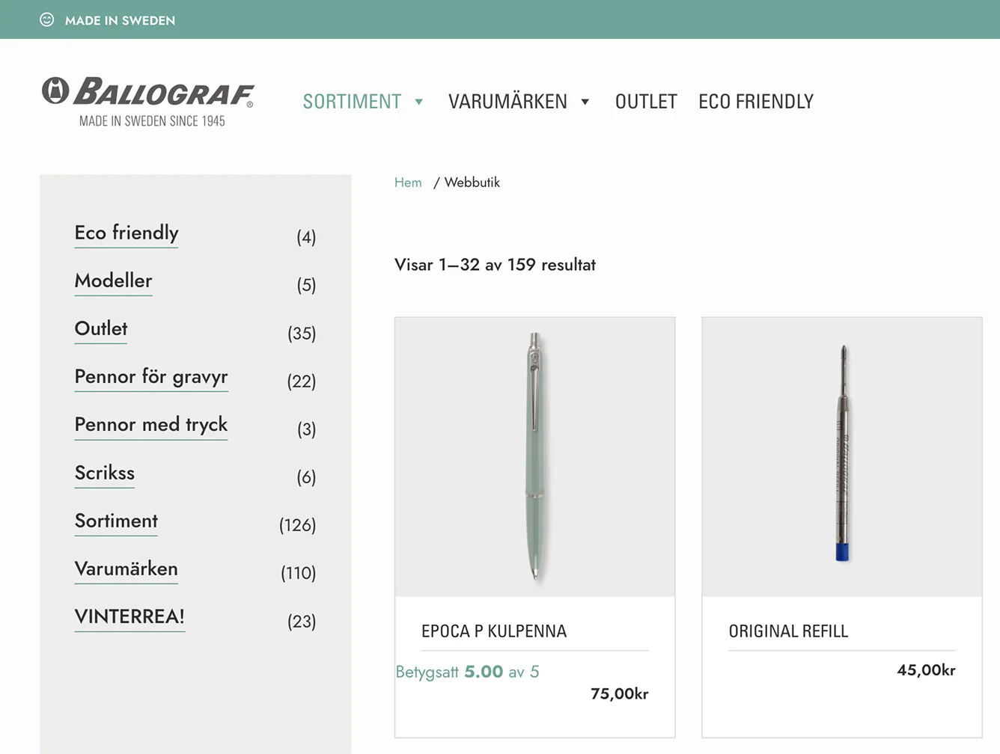
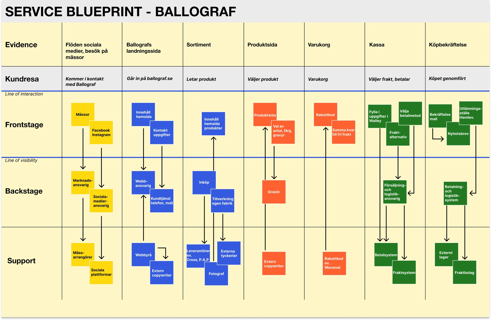
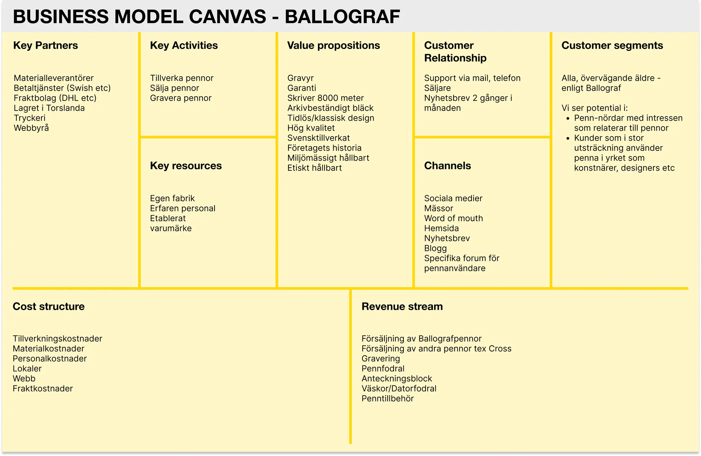
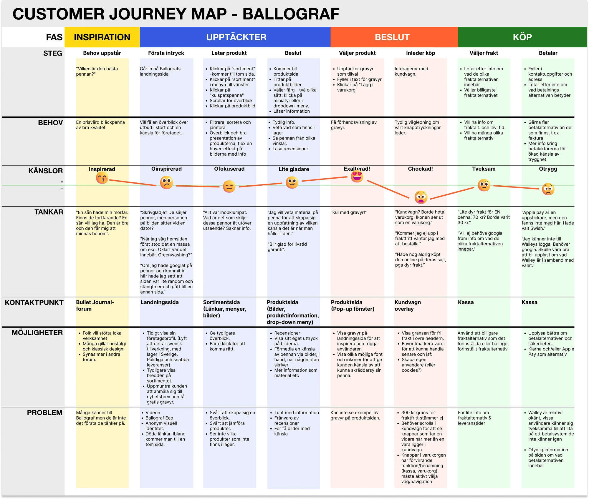
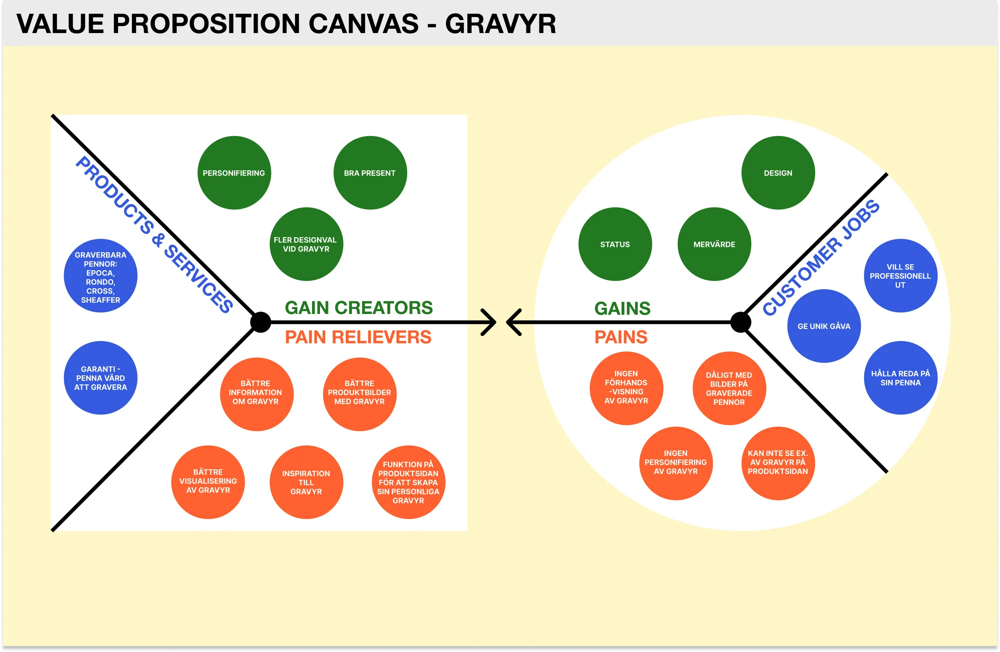
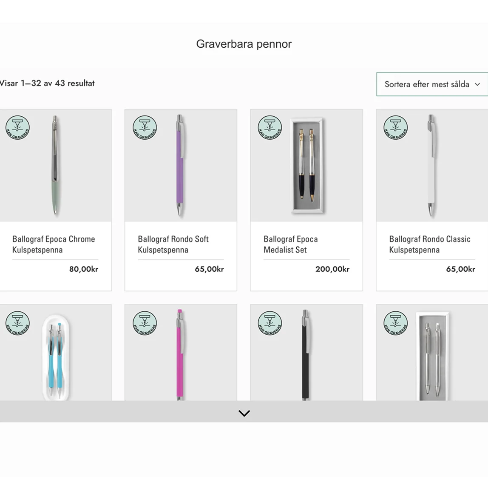
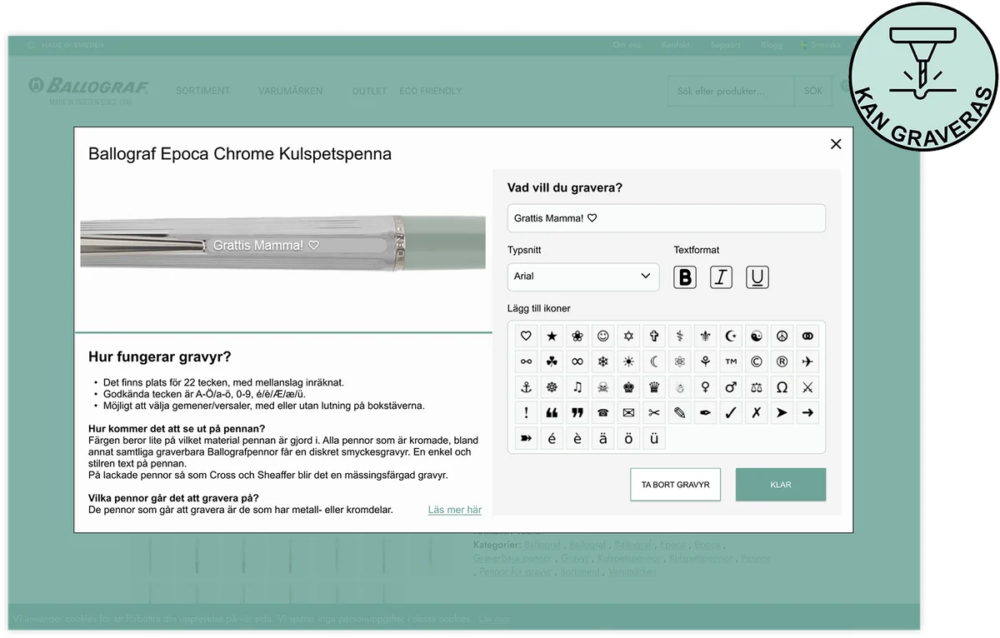

UX Research — Service Design — B2C
How we found business value in a quiet feature

An open-ended brief for a heritage brand.
Ballograf is an iconic Swedish pen brand, founded in 1945. As part of a service design course, our class was invited to strengthen their B2C channels and help the website work harder for the brand.
Our brief was open-ended: identify ways to strengthen Ballograf's B2C channels and help their website work harder for the brand. Through an early, hypothesis-based Customer Journey Map, we realized we couldn't compete on things like price or availability. So we shifted focus.
What else could set Ballograf apart?

What I did.
- Secondary research: competitive landscape, brand positioning, industry benchmarks.
- Survey design: structured questionnaire across pen enthusiast communities.
- Think-aloud testing: facilitated the majority of usability sessions.
- Stakeholder pitch: co-presented final recommendations to Ballograf.
What we did.
- Course project: five students, approx. 3 weeks, real client.
- Methods: secondary research, heuristic evaluation, survey, Business Model Canvas, Customer Journey Map, Value Proposition Canvas, Service Blueprint.
- Prototype design: engraving landing page, “Kan graveras” emblem concept.
The best part was buried three clicks deep.
We followed a Double Diamond-inspired process, woven together with tailored service design methods. The feature with the strongest emotional response was the one users were least likely to find.
Discovery.
- Secondary research: mapped existing brands and competitors.
- Heuristic evaluation: Nielsen-based audit identifying 14 usability issues, prioritised by severity and effort.
- Factory visit: informed our early Service Blueprint, Business Model Canvas and gave us operational context overall.
- Survey: 200 respondents covering brand awareness, purchase intent, and what actually drives pen buying decisions.
- Interviews: 7 in-depth sessions and think-aloud tests, followed by a Customer Journey Map built from all previous data combined.

Service Blueprint: operational mapping from our factory visit.

Business Model Canvas: mapped early to focus the research.

Customer Journey Map: engraving discovery buried at click depth three.

Value Proposition Canvas: differentiation over price competition.
The engraving insight.
Seven think-aloud sessions with pen enthusiasts and the Customer Journey Map surfaced something new for us. When participants stumbled on the engraving feature, their tone shifted. Surprise, then delight, then “I didn’t know they did this.” A genuine emotional response to something personal.
This moment was happening several clicks deep into the website despite it's grand reception in our tests. We now realized that this feature should stand at the foundation for a strengthened USP: personalisation at source, direct from the manufacturer. The Value Proposition Canvas tied this back to both business goals and observed user needs, for the upcoming stakeholder pitch.
The prototype.
- “Kan graveras” emblem: a brand-specific badge applied to every engravable product, signalling engraving as both a function and a premium touch.
- Primary navigation: engraving surfaced as a top-level destination with its own nav entry.
- Dedicated landing page: a standalone engraving page acting as the conversion destination, with a clear path to purchase.
- Product hierarchy: engravable products promoted within category listings to capture browse intent.
Before: engraving buried three clicks deep, invisible to most users.

Prototype example: engraving emblem in product scroll.
Retrospect & reflections.
- Recommendations landed well with the stakeholder, because they were grounded in observed behavior and built on existing brand strengths.
- Mapping frameworks early focused the research. When you know what you're looking for, the data is more likely to tell a clearer story.
- The engraving insight came from emotional reactions in testing, something a survey or complaint form easily could have missed.
- This project taught me how strategic service design is directly linked to profitability, stronger branding, and better overall B2C performance.

Prototype example: improved customization menu.